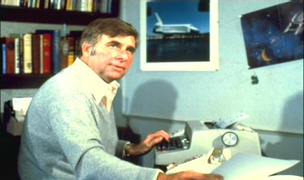
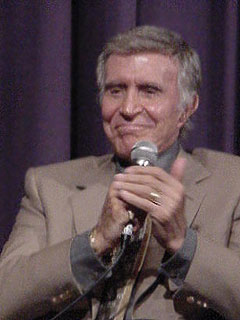
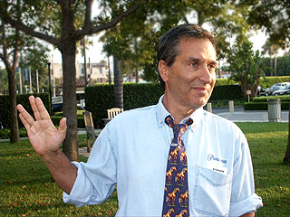
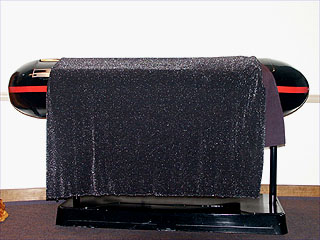
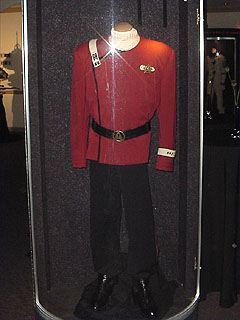
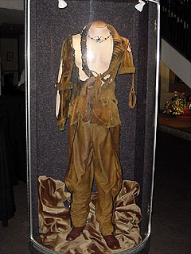
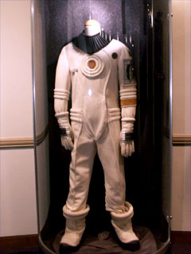
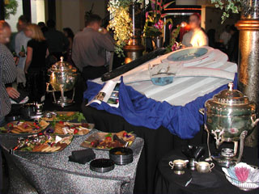
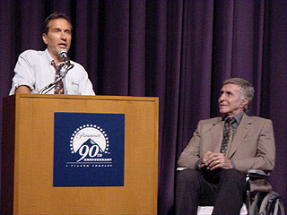
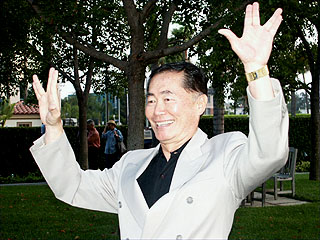

|

STAR TREK II:
THE WRATH OF KHAN
1982


Sinopse
comentada
Comentrios
Citaes
Efeitos
Especiais
Trilha Sonora
Trivia
Ficha
Tcnica
O
DVD
"Jornada nas Estrelas II: A Ira de Khan" um grande marco na histria da franquia por tantas razes diferentes que difcil eleger a tnica de sua importncia. Em primeiro lugar, ele marca uma ruptura definitiva, maior do que qualquer outra j vista, entre o criador e sua criao.

Depois do fiasco da produo de "O Filme" (apesar do estrondoso sucesso de bilheteria), a Paramount decidiu que Gene Roddenberry no era algum que eles gostariam de manter na equipe responsvel pela continuao. Talvez para aplacar a fria dos fs, o estdio no tenha simplesmente demitido o escritor, mas em vez disso dado a ele o cargo honorfico de consultor-executivo. Era definitivamente o fim da ligao entre Gene e os personagens que havia criado.
Para o lugar dele, a Paramount escolheu Harve Bennett. Por uma razo muito simples: o estdio queria um filme barato, e Harve j havia provado em diversas ocasies que economizar era seu forte. Claramente, o objetivo era simplesmente fazer mais algum dinheiro com Jornada, sem se preocupar com a qualidade ou a fidelidade ao original.
Felizmente, Harve se preocupou em resgatar a magia da Srie Clssica, que havia se perdido no primeiro filme, devido, entre outras coisas, prpria confuso de Roddenberry ao reinterpretar sua criao. E decidiu que o filme precisava contar as mudanas na vida desses personagens, no somente coloc-los mais uma vez em ao por duas horas. Nascia a premissa bsica que faria de "A Ira de Khan", o mais fiel exemplo de produo bem-sucedida de Jornada para o cinema.

Para criar esse clima de "volta s origens", Bennett decidiu partir de um episdio da Srie Clssica, "Space Seed", trazendo de volta o grande vilo Khan Noonien Singh, interpretado por Ricardo Montalban. Ele e Jack Sowards comearam a trabalhar nos detalhes do roteiro, mas no conseguiram nenhum grande resultado. S mesmo quando Nicholas Meyer veio a bordo, formalmente como diretor e informalmente como idealizador compledo do projeto, que a histria e todos os seus espetaculares elementos comearam a travar em seus lugares.Com um casamento perfeito (e aparentemente impossvel) de premissas desencontradas em um nico roteiro, com um tema unssono, mas distribudo em vrios planos da histria, Meyer transformou "A Ira de Khan" em mais do que um simples filme: ele se tornou um cone do que um filme de Jornada deveria ser.

Harve Bennett entrou com a economia -- a premissa bsica que o estdio lhe imps -- e Nick Meyer trouxe a genialidade e a inspirao. Com isso,
"Jornada nas Estrelas II: A Ira de Khan" se tornou mais do que "uma-continuao-para-ganhar-uns-tostes": um filme que, no mnimo, provou que a franquia tinha um futuro slido e lucrativo pela frente, que se estendia alm do alcance desta segunda produo.
O segredo para filmes bons e baratos altamente valioso, e s por isso a dupla Bennett & Meyer merecia todos os crditos. Mas o sucesso foi mais alm. Com sua vibrao e competncia, Nick reenergizou todo o elenco e a equipe de produo de
Jornada. Depois da sinuosa produo de "O Filme", Shatner, Nimoy e cia. no se sentiam particularmente vontade voltando a seus postos a bordo da Enterprise. Mas essa atmosfera de "l vamos ns de novo para essa porcaria" logo se dissipou, fazendo at o normalmente irredutvel Nimoy repensar a bno que seria ter seu personagem, Spock, dentro de um caixo at o final do filme.

De certa maneira,
"A Ira de Khan" est para "Where No Man Has Gone Before" assim como
"O Filme" est para "The Cage". O primeiro piloto de
Jornada para TV, "The Cage", mostrou aos executivos da rede NBC que o formato tinha potencial. Mas faltavam muitos ajustes com os personagens e era preciso mudar o equilbrio entre aventura e filosofia. Com
"Where No Man Has Gone Before", os executivos ficaram satisfeitos e
Jornada nas Estrelas ganhava um espao na programao de TV. Da mesma maneira,
"O Filme" demonstrou um enorme potencial -- especialmente com sua bilheteria estrondosa --, mas faltava muito do carisma e do esprito de aventura que poderiam manter um pblico interessado por cada continuao.
"A Ira de Khan" atingiu esse delicado estado de equilbrio, a um custo baixssimo.
Na verdade, o filme retoma a premissa que fez a Srie Clssica to bem-sucedida: no importa o oramento; se o roteiro bom, se as idias so boas, o sucesso garantido.
No fosse revoluo suficiente, "A Ira de Khan" tambm elevou Jornada nas Estrelas a um outro padro esttico, muito mais atraente e vivo do que o tedioso aspecto de
"O Filme". Os novos uniformes da Frota Estelar se tornaram uma marca entre os fs (at hoje h os que consideram esses os melhores modelos j produzidos para Jornada) e se tornaram o padro para os filmes seguintes. O aspecto naval da srie foi retomado e ampliado, realando a "realidade" por trs daquela fico cientfica.



Os efeitos especiais conseguiram o impossvel: so econmicos e ao mesmo tempo revolucionrios. Temos a primeira tomada extensa feita em CGI (por computador) da histria do cinema. Temos uma nebulosa que se tornaria uma das mais recicladas da franquia. Temos a mais celebrada batalha de naves espaciais j retratadas em
Jornada nas Estrelas. E temos uma etiqueta de preo que agradou at ao mais sovina dos executivos da Paramount. Um sucesso.
Simplesmente tudo que poderia dar certo numa produo, apesar das remotas probabilidades de isso acontecer (ou todo dia que um diretor aparece e conserta um roteiro destroado em apenas uma semana e meia?), aconteceu durante a confeco de
"A Ira de Khan". E s por isso que Jornada nas Estrelas encontrou seu futuro no cinema.
Em contrapartida, sobrou muito pouco para Nicholas Meyer fazer quando a Paramount o convidou para reeditar o filme para a nova verso em DVD. Ele basicamente reciclou uma edio que j havia feito para a TV logo aps o lanamento nos cinemas. E as mudanas so bem sutis e no fazem grande diferena com relao verso original.
Nem poderia ser diferente. Havia pouca coisa para ser mudada em "A Ira de
Khan". Alguns momentos dos personagens foram ligeiramente explicados, entendemos a relao entre Preston e Scotty, vemos a reao de Spock ao filho de Kirk e temos uma verso maior da clssica cena entre Kirk e McCoy no apartamento do almirante em San Francisco. Mas nada que mude os rumos ou a esttica do filme, como aconteceu com a reedio de Robert Wise em
"O Filme".

Durante a festa de lanamento da Edio do Diretor em Hollywood, em 2002, Nicholas Meyer e Ricardo Montalban estiveram presentes. Enquanto o ator contou ao pblico algumas anedotas sobre como ele recapturou o esprito de Khan, aps mais de uma dcada sem t-lo interpretado, Meyer fez questo de enfatizar que o filme a ser projetado em breve era essencialmente o mesmo de 1982.

Ainda bem. Porque havia muito pouco a reparar no esforo original -- "A Ira de Khan" j nasceu um vencedor. Uma mensagem clara para o pblico, a captura dos personagens originais para os fs, uma gorda bilheteria para a Paramount, uma espetacular cena de morte com o mais popular personagem da franquia. O filme tem de tudo. Se h algo que mudou para sempre a forma de se encarar Jornada nas Estrelas, especialmente no cinema, ela se chama "A Ira de Khan". E a Enterprise parte em velocidade de dobra, rumo prxima aventura.
